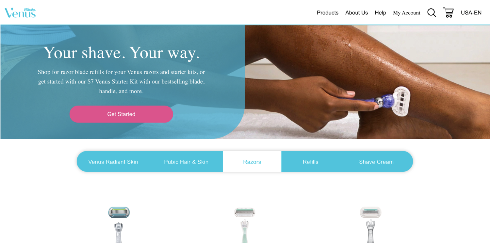

Kids

Kids - For Crayola, we see clear instances of the recommended designs meant to appeal to children. There is a strong, bold font with a very limited number of words. There are interactive, click-able features on the page. And the colors used are vivid, bright, and diverse. This is consistent with the research, as well as personal experience. This would be an archetypal website we imagine when we think of a kids website.
Elderly
Elderly - Here is an example of a website mostly meant for older generations–the Canada Revenue Agency (CRA) website. We immediately notice the discrepancy between this and the previous children’s page. There is an obvious lack of color and simplicity in font. It can be overall described as “outdated.” There is little to no use of images, as well. We must note that there arises the question of causation: these stylistic choices could be made with intention for ease-of-use and appeal, but also they could be motivated by an inherent bias that older populations are not technically-able or picky enough for modern design elements. As such, it could be that these design elements are not necessarily the most appealing for this demographic. Nevertheless, it does show a correlation between these simpler, more outdated designs and older populations.
Men

Men - Gillete, a male-centered product, uses many of the clear masculine design elements we discussed. The colors lean significantly towards a darker tone, with larger bold fonts preferred. The photos used match that of a generally male audience. This is a website that would generally make us think of a male webpage, even without having background knowledge about the product itself.
Women
Women - Venus, the female counterpart of Gillette, employs traditionally female-oriented designs into its webpage. There is a strong focus on lighter colors. There is clearly a contrast between the Gillette page and this; the Venus page immediately gives a brighter aesthetic. The image is also leaning towards a feminine direction, as opposed to having photos of men. Fonts used are lighter, less accented. Altogether, the pink colors with the font and images give a clean, simple design that agrees with our findings on women-focused websites. It should also be noted that Venus does not contain overtly feminine designs, as was the case with our example landing page, but it remains clear to see the distinction between itself and the Gillette, such that we can identify a clear usage of categorically feminine design preferences.
Instagram - Instagram is an application that is advertised as being universal, meant for everyone. But in taking a closer look at its design, we first note that the logo is made with very bright and light colors of red, pink, and yellow. Using the app, we observe that there is an overall aura of simplicity with sleek, white coloring. The font is very lightly accented and thin, also being relatively small in size. With respect to our previous research, we can identify that the color choices agree more with a younger demographic that leans towards women. This makes logical sense when we think about Instagram’s most significant user base: younger generations. And it can also be noted that women tend to be more active users of social media applications such as Instagram than men. This comes together to make Instagram have a predominantly youth-centered appeal that might particularly speak to women more. This results in the situation of other demographics, such as older users, not getting the same benefits, attraction, and experience that the target population enjoys. This, therefore, gives us a disparate impact and contradiction with a website’s design and stated, intended purpose. It can be noted that design can be the deciding factor of how an application and its features are received and enjoyed by users. A possible remedy to this situation that we have brainstormed is to focus more on inclusivity by implementing a “Display Settings” functionality to allow users to pick out their own fonts, color palettes, logo designs, themes, and more. This gives the most personalized user experiences and takes away the need to make stereotypical assumptions based on their user base’s preferences. It helps to ensure an equal experience and eliminates the presence of one group enjoying the experience more or less than another group.